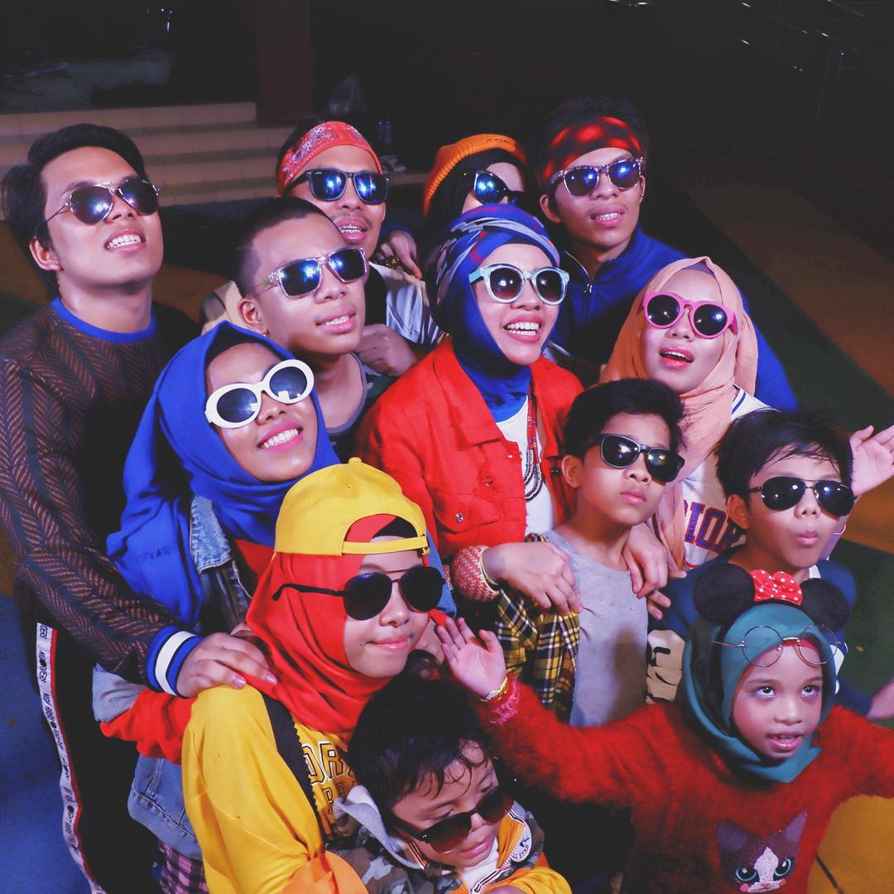

|
Gen Halilintar adalah nama atau julukan sebuah keluarga Indonesia yang unik serta inspiratif dan menimbulkan banyak kekaguman. Keunikan keluarga ini telah diekspos oleh berbagai media, baik cetak, maupun elektronik dalam bentuk talk show. Keluarga berdarah Minangkabau ini menjadi terkenal setelah sang ibu menulis buku yang berjudul Kesebelasan Gen Halilintar: My Family My Team pada awal 2015. Buku yang banyak diminati publik ini bercerita tentang keluarga Gen Halilintar yang telah melakukan perjalanan bisnis keliling dunia, ke 120 negara dengan memboyong seluruh anggota keluarga tanpa didampingi asisten atau pembantu. |
 |
|---|